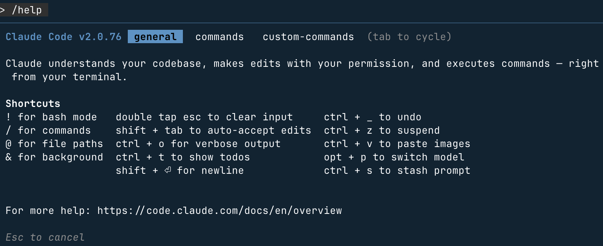
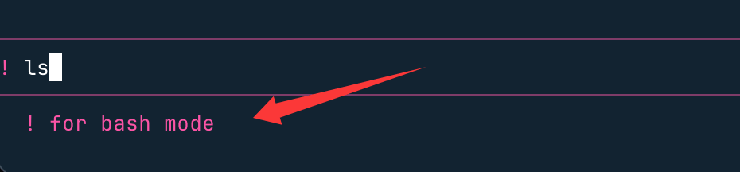
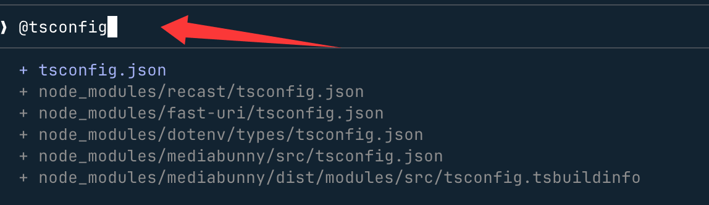

Claude Code スラッシュ / コマンド
スラッシュ/コマンドは Claude Code の対話セッションのクイックコントロール入り口、入力することで/で始まる命令を入力すると、機能の呼び出し、セッション管理、カスタムワークフローをすばやく実行できます。

利用可能なすべてのコマンドを表示：
/help
/helpすべての組み込みコマンド、現在のプロジェクトのカスタムコマンド（Skills / Commands）、および接続済みの MCP サーバーが公開しているコマンドが一覧表示されます。
コマンドの種類：
| 種類 | トリガー方法 | 提供元 | 保存場所 | 適用シーン |
|---|---|---|---|---|
| 組み込みコマンド | /command |
Claude Code に同梱 | 内部実装 | セッション管理、設定、統合などのシステム操作 |
| 組み込み Skills | /skill-name |
Claude Code に付属 | 内部実装 | コードレビュー、デバッグ、バッチ処理などのプリセット AI ワークフロー |
| プロジェクトカスタム Skills 推奨 | /skill-name |
ユーザーが作成したディレクトリ + SKILL.md | .claude/skills/<名称>/SKILL.md |
チーム共有の再利用可能なワークフロー。git に含める。Claude の自動トリガーに対応 |
| プロジェクトカスタムコマンド 旧形式 | /command |
ユーザーが作成.mdファイル |
.claude/commands/ |
チーム共有の反復ワークフロー。git に含める |
| 個人カスタム Skills | /skill-name |
ユーザーが作成したディレクトリ + SKILL.md | ~/.claude/skills/<名称>/SKILL.md |
プロジェクト横断で使える個人ワークフロー |
| 個人カスタムコマンド | /command |
ユーザーが作成.mdファイル |
~/.claude/commands/ |
プロジェクト横断で使える個人ワークフロー（旧形式） |
| MCP コマンド | /mcp__服务器__命令 |
MCP サーバーが自動公開 | MCP サーバーによって提供 | GitHub、Slack、データベースなどの外部ツールを呼び出す |
!Shell コマンド |
!bash命令 |
直接実行 | — | AI の処理を介さず、ターミナルコマンドを直接実行 |
コマンドの優先順位（同名の場合）：エンタープライズレベル > 個人レベル > プロジェクトレベル > 組み込み
/でトリガーされますが、Skills（.claude/skills/）は新しい世代の形式で、複数ファイルの構成、Claude の自動トリガー、より豊富な frontmatter 制御をサポートします。Commands（.claude/commands/）は旧形式ですが、引き続き完全互換です。新規プロジェクトでは Skills の直接利用を推奨します。一、よく使う組み込みスラッシュコマンド
組み込みコマンドは Claude Code に標準搭載された中核機能で、直接入力するだけで使えます。初心者はまず、以下の高頻度コマンドを優先的に覚えましょう：
基本操作コマンド
| コマンド | 用途 | 初心者向けの例 |
|---|---|---|
/help |
利用可能なすべてのコマンドと説明を表示（MCP コマンドを含む） | 入力/helpコマンド一覧をすばやく確認 |
/exit |
現在の対話セッションを終了 | もう続けたくない場合は、/exitを入力してそのまま終了 |
/clear |
現在の会話履歴をクリア | セッションが乱雑？/clearワンクリックでクリア |
例えば、/helpコマンドでヘルプ情報を表示し、Tabキーでメニューを切り替えられ、Escで終了します：

セッション管理コマンド
| コマンド | 構文 | 機能説明 | 使用例 | 注意事項 |
|---|---|---|---|---|
/clear |
/clear |
すべての会話履歴をクリアし、新しいセッションを開始 | /clear |
復元できないため、先に/export |
/compact |
/compact [侧重点] |
履歴の会話をインテリジェントに圧縮し、意味を保持しながら Token 使用量を削減 | /compact 保留数据库设计部分 |
与 /clear違い：完全にクリアするのではなく、意味の要約を保持 |
/resume |
/resume [id或名称] |
履歴セッションを復元。引数なしで復元可能な全セッションを一覧表示 | /resume task-hub-backend |
組み合わせると/renameさらに効果的 |
/rewind |
/rewind |
最近の操作（ファイル変更と会話内容を含む）を取り消し、前のチェックポイントに復元。新版では「コードのみロールバック」オプションが追加され、会話履歴を保持できる | 按 Esc2回呼び出すとロールバックメニューが表示 |
Agent の実行結果に満足できない場合のロールバックに最適 |
/rename |
/rename <名称> |
現在のセッションに名前を付け、後から/resume見つけやすくする |
/rename auth-module-refactor |
命名規則の推奨：功能-操作 |
/export |
/export [文件名] |
会話をファイルにエクスポート。ファイル名を指定しない場合はクリップボードにコピー | /export debug-session.md |
Markdown 形式に対応 |
/copy NEW |
/copy |
Claude の直近の返信をクリップボードにコピー。複数のコードブロックが含まれる場合は対話式セレクターが表示される | /copy |
手動でテキストを選択するよりはるかに速い |
/btw NEW |
/btw <问题> |
メインタスクのコンテキストに影響を与えずに、一時的な質問をすばやく挿入。回答がメインの会話フローを汚染しない | /btw Redis 的默认端口是多少？ |
現在のタスクを妨げずに一時的に調べたい場合に最適 |
/exit |
/exit |
Claude Code REPL を安全に終了 | /exit |
— |
コンテキストと記憶
| コマンド | 構文 | 機能説明 | 使用例 | 注意事項 |
|---|---|---|---|---|
/context |
/context |
コンテキストウィンドウの使用量を可視化し、各部分（履歴/ファイル/システムプロンプト/Skills）の割合を表示 | /context |
上限に近づいたら実行すべき/compact 或 /clear |
/memory |
/memory |
エディターを開いて編集CLAUDE.md（プロジェクトレベルとグローバルレベル）。セッションをまたいでプロジェクトの取り決めを永続化 |
/memory |
変更後、以降のすべてのセッションに反映される |
/add-dir |
/add-dir <路径> |
追加のディレクトリを作業範囲に含める。monorepo やディレクトリをまたぐ操作に最適 | /add-dir ../packages/shared |
複数回呼び出して複数のディレクトリを追加可能 |
/todos |
/todos |
現在のセッションで Claude が記録した TODO 項目を一覧表示 | /todos |
— |
/diff NEW |
/diff |
今回のセッションでのすべてのファイル変更の diff 要約を表示し、Claude が行った変更を振り返りやすくする | /diff |
与 /rewind組み合わせ：まず/diffで変更を確認してから、ロールバックするか判断 |
プロジェクトと設定
| コマンド | 構文 | 機能説明 | 使用例 | 注意事項 |
|---|---|---|---|---|
/init |
/init |
プロジェクト構造を分析し、自動生成CLAUDE.md技術スタック/ビルドコマンド/コード規約を書き込む |
/init |
新規プロジェクトに必須の最初のステップ |
/config |
/config |
対話式インターフェースで Claude Code のグローバル設定を管理 | /config |
— |
/status |
/status |
設定ステータスページを開き、現在の設定概要を確認 | /status |
— |
/hooks |
/hooks |
ライフサイクル Hook を対話式に設定（例：コミット前の lint、保存後のフォーマット） | /hooks |
PreToolUse / PostToolUse / Notification / Stop をサポート |
/permissions |
/permissions |
ツール権限を表示または更新（ファイル読み取り/ファイル書き込み/コマンド実行など） | /permissions |
権限を制限すると操作の安全性を向上できる |
/sandbox |
/sandbox |
分離されたサンドボックス環境で Bash コマンドを実行し、ホストシステムへの影響を防ぐ | /sandbox |
不確かなスクリプトのテストに最適 |
/doctor |
/doctor |
インストール状態を診断し、依存関係/設定/ネットワーク接続が正常かどうか確認 | /doctor |
異常が発生したらまず実行 |
モデルと出力
| コマンド | 構文 | 機能説明 | 使用例 | 注意事項 |
|---|---|---|---|---|
/model |
/model [模型名] |
基盤の AI モデルを切り替える。引数なしで対話式選択メニューを表示 | /model claude-haiku-4-5-20251001 |
下のモデル比較表を参照 |
/plan |
/plan [任务描述] |
プランモードに入ると、Claude は実行計画を出力して確認を待ってから行動する | /plan 重构认证模块并补充测试 |
複雑な多段階タスクに適しており、方向性のズレを防ぐ |
/output-style |
/output-style |
応答形式を設定（コード優先/説明優先/簡潔モードなど） | /output-style |
— |
/theme |
/theme |
ターミナルUIの配色を切り替える | /theme |
— |
/statusline |
/statusline |
ターミナル下部のステータスバーに表示する内容をカスタマイズ | /statusline |
— |
/vim |
/vim |
Vimキーバインドを有効化 | /vim |
Vimユーザー向け |
/terminal-setup |
/terminal-setup |
インストールShift+Enter改行バインド、複数行プロンプトの入力に便利 |
/terminal-setup |
初回利用時の推奨設定 |
利用可能モデル比較表（2026年）：
| モデル識別子 | 位置づけ | 適用シーン |
|---|---|---|
claude-sonnet-4-6 |
バランス型（デフォルト） | 日常の開発タスク、Pro/Max5ユーザーに最適 |
claude-haiku-4-5-20251001 |
高速・軽量 | 簡単な問い合わせ、カスタムコマンドでトークンを節約 |
claude-opus-4-6 |
高性能フラッグシップ | 複雑なアーキテクチャ設計、高度なコード推論、Max20ユーザーはデフォルトに設定可能 |
コードとツール
| コマンド | 構文 | 機能説明 | 使用例 | 注意事項 |
|---|---|---|---|---|
/review |
/review |
最近変更したコードを構造化Code Reviewし、優先度順に改善提案を出力 | /review |
— |
/security-review |
/security-review |
現在の変更に対するセキュリティ専門レビュー（SQLインジェクション/XSS/機密情報漏えいなど） | /security-review |
リリース前に必ず実行 |
/pr-comments |
/pr-comments |
現在のブランチに関連するPRのレビュー意見を取得し、ターミナルで直接処理 | /pr-comments |
GitHub連携の設定が必要 |
/install-github-app |
/install-github-app |
GitHub Actions連携を設定すると、Claudeが新しいPRを自動レビュー | /install-github-app |
生成.github/workflows/claude-code-review.yml |
/agents |
/agents |
専門サブエージェント（DB専門家/セキュリティ専門家/テスト専門家など）の表示、作成、管理 | /agents |
— |
/bashes |
/bashes |
バックグラウンドで実行中のBashプロセスを表示、中断や出力確認が可能 | /bashes |
— |
/skills NEW |
/skills |
利用可能なすべてのSkills（組み込み+プロジェクト+個人）を一覧表示。説明とトリガー方法を含む | /skills |
コンテキスト予算が不足すると一部のSkillsが除外される。このコマンドで読み込み状態を確認できる |
統合と拡張
| コマンド | 構文 | 機能説明 | 使用例 | 注意事項 |
|---|---|---|---|---|
/mcp |
/mcp |
MCPサーバー接続を管理（接続/切断/利用可能ツールの表示） | /mcp |
第7節「MCPコマンド詳細」を参照 |
/ide |
/ide |
VSCode / JetBrains などのIDEとの連携統合を設定 | /ide |
— |
/plugin |
/plugin [子命令] |
Claude Codeプラグインを管理：インストール、アンインストール、更新、マーケット閲覧 | /plugin install typescript-lsp |
公式プラグインマーケットには厳選36プラグイン |
/teleport |
/teleport |
claude.aiウェブで開始したセッションをローカルターミナルに移行して続行（クラウド→ローカル方向） | /teleport |
GitHub Appのインストールが必要。GitHubホストのリポジトリのみ対応 |
/pluginサブコマンド詳細：
| サブコマンド | 機能 |
|---|---|
/plugin install <名称> |
指定プラグインをインストール |
/plugin list |
インストール済み全プラグインを一覧表示 |
/plugin update |
インストール済み全プラグインを更新 |
/plugin marketplace |
公式プラグインマーケットを閲覧 |
/plugin uninstall <名称> |
指定プラグインをアンインストール |
統計とアカウント
| コマンド | 構文 | 機能説明 | 使用例 | 注意事項 |
|---|---|---|---|---|
/cost |
/cost |
現在のセッションのトークン消費量と推定費用を表示 | /cost |
API従量課金ユーザーにのみ表示。サブスクリプションユーザーのトークンはプランに含まれる |
/usage |
/usage |
現在のプラン使用量、残り割り当て、レート制限状態を確認 | /usage |
— |
/stats |
/stats |
過去の使用データをグラフで表示（日次トークン/セッション数） | /stats |
— |
/release-notes |
/release-notes |
Claude Codeの最新バージョン変更履歴を確認 | /release-notes |
— |
/bug |
/bug |
現在のセッションコンテキストをパッケージ化し、Anthropicにバグレポートを送信 | /bug |
— |
/login |
/login |
Anthropicアカウントにログイン、または切り替え | /login |
複数アカウントの開発者向け |
/logout |
/logout |
現在のアカウントをログアウト | /logout |
— |
/privacy-settings |
/privacy-settings |
データ利用の設定を管理（モデル学習に会話を利用してよいかなど） | /privacy-settings |
— |
/remote-env |
/remote-env |
リモートセッションの環境変数を設定 | /remote-env |
— |
二、組み込み SkillsNEW
組み込みSkillsはClaude Codeに同梱されるプリセットAIワークフローです。組み込みコマンドとは異なり、詳細なプロンプトを読み込んだ後Claudeが推論して実行し、より豊かな分析・操作結果を生成します。同様に/でトリガーします。
組み込みコマンド（例：
/clear、/compact）は固定ロジックを実行し、AI推論を伴わず、非常に高速です。組み込みSkills（例：
/debug、/simplify）はプロンプトを読み込んだ後Claudeが推論して実行し、結果がより豊かで、複雑な分析タスクに適しています。| コマンド | 機能説明 | 適用シーン |
|---|---|---|
/simplify |
指定したコードやテキストを簡素化し、可読性を高め、不要な複雑さを排除 | 冗長な関数のリファクタリング、過度にエンジニアリングされたコードの簡素化 |
/debug |
エラーメッセージや異常動作を体系的に根本原因分析し、修正方針を提示 | 再現が難しいバグの特定 |
/batch |
複数のファイルや対象に同じタスクを並列実行（一括リネーム、一括型注釈追加など） | 大規模な反復的コード変更 |
/loop |
終了条件を満たすまで操作をループ実行（テストが通るまで再試行を繰り返すなど） | CI修正ループの自動化 |
/claude-api |
Anthropic APIを呼び出すサンプルコードをすばやく生成。モデルとタスクタイプの指定に対応 | Claude API連携プロトタイプの構築 |
三、コマンドプレフィックス構文
| プレフィックス | 構文 | 機能説明 | 例 | 比較 |
|---|---|---|---|---|
/ |
/command |
組み込みコマンド、組み込みSkills、カスタムSkills/Commandsをトリガー | /review |
— |
! |
!<bash命令> |
Shellコマンドを直接実行し、AI処理をバイパスしてトークンを節約 | !git status |
ターミナルで直接実行するのと同等ですが、「gitの状態を確認して」よりトークンを節約 |
@ |
@<文件路径> |
ファイルの内容を現在のコンテキストに注入 | @src/api/users.ts |
手動でコードを貼り付けるより正確で、複数ファイルに対応 |
!プレフィックス使用例：

> ! ls > !git log --oneline -10 > !npm test -- --coverage > !cat logs/error.log | tail -50
@プレフィックス使用例：

> 对比 @src/auth/v1.ts 和 @src/auth/v2.ts 的实现差异 > 审查 @src/api/users.ts 中的错误处理逻辑是否完善
四、カスタム Skills（新しい推奨形式）
Skillsはカスタムコマンドの新世代形式で、旧バージョンの.claude/commands/を置き換えます。どちらの形式も正常に使用できますが、新規プロジェクトではSkillsの直接使用を推奨します。
Skills と Commands の比較
| 特性 | Skills（推奨） | Commands（旧形式） |
|---|---|---|
| 保存パス | .claude/skills/<名称>/SKILL.md |
.claude/commands/<名称>.md |
| トリガー方法 | /名称手動トリガー、またはClaudeが説明に基づき自動トリガー |
/名称（手動トリガーのみ） |
| 複数ファイル対応 | テンプレート、サンプル、補助スクリプトの添付に対応 | 単一ファイル |
| Claudeによる自動トリガー | Claudeがdescriptionに基づきインテリジェントに呼び出しを判断 | |
| Agent Skills標準 | オープン標準に準拠し、ツール間で共有可能 |
Skill の作成手順
ステップ1：ディレクトリ構造の作成
カスタムSkillsは2種類あり、保存場所が異なります：
- プロジェクトSkill：現在のプロジェクトでのみ有効、チームで共有 → ディレクトリ：
.claude/skills/<名称>/ - 個人Skill：全プロジェクトで有効、自分用 → ディレクトリ：
~/.claude/skills/<名称>/
# 创建项目级 Skill（团队共享，纳入 git） mkdir -p .claude/skills/optimize # 创建个人级 Skill（跨项目通用，本地私有） mkdir -p ~/.claude/skills/fix-bug
ステップ2：SKILL.mdを作成
新規作成SKILL.mdファイル。YAML frontmatterに設定を記述し、下部のMarkdown本文にプロンプトを記述します。nameフィールドがトリガーコマンド名を定義します。
例：コードパフォーマンス最適化Skillの作成
--- name: optimize description: 分析代码性能瓶颈，给出优化建议。当用户提到性能问题时自动触发。 allowed-tools: Read, Grep, Glob argument-hint: [目标文件或目录] model: claude-sonnet-4-6 --- 分析以下代码的性能瓶颈，给出具体的优化建议，优先考虑时间复杂度和内存占用： $ARGUMENTS
使用時に入力：
/optimize src/utils/data-processor.ts
サブディレクトリ名前空間による整理
では.claude/skills/配下でサブディレクトリを使い職能別に分類管理できます。ディレクトリ名がそのままコマンド名になります：
.claude/skills/
├── optimize/ → /optimize
│ ├── SKILL.md
│ └── examples/ # 可选：示例文件辅助 Claude 理解
├── debug/ → /debug
│ ├── SKILL.md
│ └── scripts/ # 可选：辅助脚本
└── commit/ → /commit
└── SKILL.md
五、カスタムスラッシュコマンド（旧形式、互換性あり）
もし繰り返し使うプロンプト（固定のコードレビュー要件、繰り返しの指示テンプレートなど）がある場合、それをカスタムコマンドにしてワンキーで呼び出せます。
コマンドファイルの保存場所：
| スコープ | 保存パス | 共有方法 | 適用シーン |
|---|---|---|---|
| プロジェクトレベル | .claude/commands/<命令名>.md |
gitに含め、チームで共有 | プロジェクト専用ワークフロー（特定フレームワークのコード生成など） |
| 個人レベル | ~/.claude/commands/<命令名>.md |
ローカル限定 | 一般的な開発習慣（個人のコードスタイルチェックなど） |
パラメータ構文：
| 構文 | 説明 | コマンドファイル例 | 呼び出し例 |
|---|---|---|---|
$ARGUMENTS |
コマンド名以降のすべてをキャプチャ | 分析并修复：$ARGUMENTS |
/fix 登录接口返回 500，见 logs/error.log |
$1 $2 |
スペース区切りの位置パラメータ | 修复 Issue #$1，优先级 $2 |
/fix-issue 42 high |
!`cmd` |
Shell コマンドを実行し、出力を Prompt に埋め込む | !`git diff HEAD` |
自動的にコマンド実行結果に展開 |
@文件路径 |
ファイル内容を Prompt に注入 | 审查 @src/utils/helpers.ts |
ファイル内容を自動読み込み |
基本原則
カスタムコマンドの本質はMarkdown テキストファイル——ファイル名がコマンド名、ファイル内容が実行するプロンプトであり、パラメータの受け渡しや Bash コマンドの呼び出しに対応。
カスタムコマンドを作成する手順
ステップ 1：コマンド格納ディレクトリの作成
カスタムコマンドには2種類あり、格納場所が異なる：
- プロジェクトコマンド：現在のプロジェクトでのみ有効、チーム共有 → ディレクトリ：
.claude/commands/ - 個人コマンド：全プロジェクトで共通、自分用 → ディレクトリ：
~/.claude/commands/
プロジェクトコマンドの作成を例にすると、まずディレクトリを作成：
# 在项目根目录执行 mkdir -p .claude/commands
ステップ 2：Markdown コマンドファイルを作成
新規作成する.mdファイル。ファイル名がコマンド名（例：optimize.md→ コマンド/optimize）、ファイル内容にプロンプトを記述。
例：コードパフォーマンス最適化コマンドの作成
# 写入提示词到文件 echo "分析这段代码的性能瓶颈，给出具体的优化建议，优先考虑时间复杂度和内存占用：" > .claude/commands/optimize.md
では、セッションで/optimizeと入力し、コードを貼り付けると、Claude が要求どおりにパフォーマンス分析を実行します！
上級テクニック：コマンドに引数を追加する
コマンドはパラメータを持てます。$ARGUMENTS（すべてのパラメータをキャプチャ）または$1 $2（位置でパラメータを取得）。
例：パラメータ付きバグ修正コマンド
コマンドファイルを作成.claude/commands/fix-issue.md：
修复 Issue #$ARGUMENTS，要求： 1. 符合项目编码规范 2. 附上测试用例 3. 说明修复思路
コマンドの使用：
/fix-issue 123 # $ARGUMENTS 会被替换成 "123"
六、Frontmatter フィールドリファレンス
カスタムコマンドファイル（commands/*.md）と Skills（skills/*/SKILL.md）の先頭に YAML Frontmatter を追加して詳細な設定が可能：
---
name: commit # Skills 中必填；命令文件中可选（默认取文件名）
allowed-tools: Bash(git add:*), Bash(git commit:*), Read, Edit
argument-hint: [commit-message]
description: 检查代码质量后提交
model: claude-haiku-4-5-20251001
context: fork
agent: general-purpose
disable-model-invocation: false
user-invocable: true
hooks:
PreToolUse:
- matcher: "Bash"
hooks:
- type: command
command: "./scripts/validate.sh"
once: true
---
フィールドの説明
| フィールド | 型 | 必須 | 説明 |
|---|---|---|---|
name |
string | Skills 必須 | トリガーとなるコマンド名を定義（/name）；コマンドファイルはデフォルトでファイル名を使用 |
allowed-tools |
string | 否 | コマンドが使用できるツール。一致するツールは毎回の手動確認が不要 |
argument-hint |
string | 否 | 在 /helpリストに表示されるパラメータ形式のヒント。例：[message] |
description |
string | 否 | コマンド機能の説明。/help 和 /skillsリストに表示；Skills では Claude が自動トリガーするかどうかの判断にも使用 |
model |
string | 否 | モデルを強制指定；簡単なタスクでは Haiku を使用してコスト削減可能 |
context |
enum | 否 | fork：独立したサブエージェントとして実行；inline：現在のセッション内で実行 |
agent |
string | 否 | context: fork時にエージェントタイプを指定 |
disable-model-invocation |
bool | 否 | 为 true時に Skill ツールによるプログラム的呼び出しを禁止 |
user-invocable NEW |
bool | 否 | 为 false時は Claude の自動トリガーのみ許可し、ユーザーは手動で実行不可/调用 |
hooks |
object | 否 | コマンド実行中のライフサイクル Hook |
allowed-tools記述例
| 記法 | 意味 |
|---|---|
Read |
任意のファイルの読み取りを許可 |
Read(src/*) |
読み取りを許可するのはsrc/ディレクトリのみ |
Bash(git *:*) |
すべての git サブコマンドを許可 |
Bash(npm test:*) |
実行を許可するのはnpm test |
Read, Grep, Glob |
複数ツールの組み合わせ |
Hook のトリガータイミング
| タイミング | 説明 | 典型的な用途 |
|---|---|---|
PreToolUse |
ツール呼び出し前 | コミット前に lint を実行、ファイル書き込み前にバックアップ |
PostToolUse |
ツール呼び出し後 | 変更後に自動フォーマット、変更ログを生成 |
Notification |
Claude が通知を発する時 | Slack メッセージの送信、デスクトップ通知 |
Stop |
Claude が応答を完了した時 | ログの記録、下流タスクのトリガー |
七、プラグインと MCP コマンド
自前で作成する以外にも、プラグイン和 MCP サーバーからさらに拡張コマンドを取得可能。
命名形式：
/mcp__<服务器名>__<命令名> [参数]
よく使う MCP コマンドの例
| MCP サーバー | コマンド例 | 機能 |
|---|---|---|
| GitHub | /mcp__github__list_prs |
現在のリポジトリの PR を一覧表示 |
| GitHub | /mcp__github__create_issue "Bug标题" high |
Issue を作成 |
| PostgreSQL | /mcp__postgres__query "SELECT * FROM users LIMIT 10" |
SQL クエリを実行 |
| Slack | /mcp__slack__send_message "#dev" "部署完成" |
Slack メッセージを送信 |
| Jira | /mcp__jira__create_issue "修复登录Bug" high |
Jira チケットを作成 |
| Figma | /mcp__figma__get_component "Button" |
Figma コンポーネント情報を取得 |
利用可能なすべての MCP コマンドを表示：/help（MCP コマンドはヘルプリスト下部に別グループで表示されます）
1. プラグインコマンド
Claude Code プラグインをインストールすると、プラグイン専用コマンドが自動的に追加されます。形式は通常：
/plugin-name:command-name # 避免命令名冲突
たとえば Git プラグインをインストールすると、/git:commitコマンドが使え、ワンクリックで規範的な commit メッセージを生成できます。
2. MCP コマンド
MCP（Model Context Protocol）サーバーは、外部ツール（GitHub、Jira など）の機能をスラッシュコマンドに変換できます。形式：
/mcp__<服务器名>__<功能名> [参数]
例：
/mcp__github__list_prs # 列出 GitHub 仓库的 PR /mcp__jira__create_issue "登录按钮失效" high # 在 Jira 创建高优先级问题
八、実用コマンドテンプレート集
テンプレート概要
| テンプレート名 | ファイルパス | 推奨モデル | 機能 |
|---|---|---|---|
| スマート Git コミット | .claude/commands/commit.md |
Haiku | デバッグ残りを確認してからコミット |
| PR コードレビュー | .claude/commands/pr-review.md |
Sonnet | 包括的な段階別レビュー |
| スマートテスト実行 | .claude/commands/test.md |
Sonnet | 実行し、失敗したケースを自動修正 |
| セキュリティ脆弱性スキャン | .claude/commands/security-scan.md |
Opus | OWASP Top 10 スキャン |
| API ドキュメント生成 | .claude/commands/api-docs.md |
Sonnet | REST API ドキュメントを自動生成 |
| コードリファクタリング | .claude/commands/refactor.md |
Sonnet | 可読性 / DRY / 型安全性のリファクタリング |
| ドキュメントリンクチェック | .claude/commands/check-links.md |
Haiku | ドキュメント内のハイパーリンクの有効性を一括検証 |
スマート Git コミット：
<!-- .claude/commands/commit.md --> --- allowed-tools: Bash(git add:*), Bash(git status:*), Bash(git diff:*), Bash(git commit:*) argument-hint: [commit-message] description: 检查代码质量后提交 model: claude-haiku-4-5-20251001 --- ## 暂存区内容 !`git diff --cached` 提交前检查以下问题，发现问题则报告并询问是否继续： 1. 遗留的 `console.log` / `print` 调试语句 2. 未处理的 `TODO` / `FIXME` 注释 3. 大段被注释掉的代码 4. 测试文件中的 `.only` / `.skip` 标记 若无问题，使用以下信息提交：$ARGUMENTS
PR コードレビュー：
<!-- .claude/commands/pr-review.md --> --- allowed-tools: Read, Grep, Glob, Bash(git diff:*), Bash(git log:*) description: 全面的 PR 代码审查 --- ## 变更文件 !`git diff --name-only HEAD~1` ## 详细差异 !`git diff HEAD~1` ## 近期提交 !`git log --oneline -5` 按 Critical / Major / Minor 三级优先级输出审查结果，涵盖： 代码逻辑与可读性、安全漏洞、性能隐患（N+1 查询）、测试覆盖率、文档完整性
スマートテスト実行：
<!-- .claude/commands/test.md --> --- allowed-tools: Bash, Read, Edit argument-hint: [test-pattern] description: 运行测试并自动修复失败用例 --- 运行匹配 "$ARGUMENTS" 的测试： 1. 自动检测测试框架（Jest / pytest / Go test） 2. 运行指定模式的测试 3. 若有失败，分析根因并修复代码 4. 重新运行验证修复 不提供参数则运行全量测试并输出覆盖率报告。
セキュリティ脆弱性スキャン：
<!-- .claude/commands/security-scan.md --> --- allowed-tools: Read, Grep, Glob description: OWASP Top 10 安全漏洞扫描 model: claude-opus-4-6 --- 以安全工程师视角审查代码库： 高危：SQL 注入、XSS、命令注入、硬编码密钥 中危：不安全的反序列化、过时依赖、敏感信息写入日志、CORS 配置过宽 低危：缺失安全响应头、错误信息暴露内部细节 输出格式：漏洞位置 + 危险级别 + 修复建议代码示例
API ドキュメント生成：
<!-- .claude/commands/api-docs.md --> --- allowed-tools: Read, Glob, Edit argument-hint: [输出文件路径] description: 自动生成 REST API 文档 --- 扫描 @src/routes/ 和 @src/controllers/，为所有端点生成 Markdown 文档： - 端点路径与 HTTP 方法 - 请求参数（Query / Body / Path）及类型 - 响应结构（成功与错误） - 认证要求 - curl 调用示例 保存到：$ARGUMENTS（默认：docs/api.md）
コードリファクタリング：
<!-- .claude/commands/refactor.md --> --- allowed-tools: Read, Edit, Glob argument-hint: [目标文件或目录] description: 代码质量重构 --- 对 $ARGUMENTS 进行重构，遵循原则： - 可读性：变量/函数命名语义化，消除魔法数字 - DRY 原则：提取重复逻辑为复用函数 - 单一职责：拆分超过 50 行的函数 - 错误处理：完善异常捕获和错误边界 - TypeScript：消除 `any` 类型，补全类型注解 重构前先输出变更计划，确认后再执行。
ドキュメントリンクチェック：
<!-- .claude/commands/check-links.md --> --- allowed-tools: Read, Bash, WebFetch argument-hint: [文档文件路径] description: 检查文档中的链接是否全部有效 model: claude-haiku-4-5-20251001 --- 读取 $ARGUMENTS 文件，提取所有超链接（http/https），逐一请求并检查响应状态码。 输出格式： - 有效链接（200） - 重定向链接（3xx）及目标地址 - 失效链接（4xx/5xx）及建议替代链接 最后输出汇总：共 N 个链接，M 个失效。
付録：設定ファイルの説明
CLAUDE.local.md 和 .claude/settings.local.json追加.gitignore、個人の好みがチームメンバーに影響しないようにする。| ファイル / ディレクトリ | 役割 | バージョン管理 |
|---|---|---|
CLAUDE.md |
プロジェクトレベルの共有指示（技術スタック、ビルドコマンド、コーディング規約など） | git に含める |
CLAUDE.local.md NEW |
個人用プライベート指示（個人の好み、チームには共有しない） | .gitignore に追加 |
~/.claude/CLAUDE.md |
グローバル指示、全プロジェクトで共通 | — |
.claude/settings.json |
プロジェクト共有設定（ツール権限、hooks など） | git に含める |
.claude/settings.local.json |
プロジェクト個人設定（settings.json を上書き、共有しない） | .gitignore に追加 |
.claude/skills/ 推奨 |
プロジェクトレベルのカスタム Skills（新しい推奨形式） | git に含める |
.claude/commands/ 旧形式 |
プロジェクトレベルのカスタムコマンド（旧形式、完全互換） | git に含める |
~/.claude/skills/ |
個人用グローバル Skills（プロジェクト横断で共通、ローカル限定） | — |
クリックしてノートを共有
<p style="font-size:14px;">ノートは本記事の内容の拡張である必要があります！</p><br> <p style="font-size:12px;"><a href="../tougao.html" target="_blank">記事投稿は、こちらをクリックしてください</a></p> <p style="font-size:14px;"><a href="../w3cnote/runoob-user-test-intro.html" target="_blank">登録招待コードの取得方法</a></p> <h3 class="text-muted"><i class="fa fa-info-circle" aria-hidden="true"></i> ノートを共有する前に<a href=";.html" class="runoob-pop">ログイン</a>が必要です！</h3> <p><a href="../w3cnote/runoob-user-test-intro.html" target="_blank">登録招待コードの取得方法</a></p>